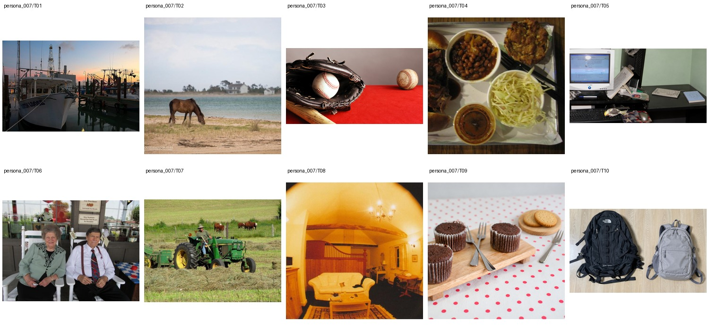

State fisheries ecologist specializing in agricultural runoff impacts on freshwater habitats · PhD in Fisheries and Aquatic Ecology · 未提供数值年龄；按职业与教育背景推定为成年人
Quinn spends her weekdays bouncing between muddy creek surveys, tense stakeholder meetings with farmers, and a cluttered office where fish-scale samples sit beside half-finished coffee cups. After work she is usually texting her sisters, grilling smashburgers in the yard, or watching Rangers highlights and Canelo fight clips while laughing too loudly at fail videos. She likes fishing trips that feel familiar and low-drama, though she gets surprisingly wound up if the boat launch is crowded or her Xbox controller starts drifting. On weekends, she volunteers as the announcer for a tiny local turtle race fundraiser, a role she takes far more seriously than her paperwork.
Attribute Modification 7 · Background 4 · Add 1 · Move 1 · Replace 4 · Remove 2 · Retouch 1 · Restyle 1
上层v3表达个性化编辑请求，底层列出操作、个性化参数及具体解析。125项global均不绑定题材或具体图片，由请求选择；人物基本信息、非global知识和图片保持不变。历史版本仅存internal；长期日常历史尚未构建。
整组图片与基础人物信息（已清理、统一字段）

{
"source": {
"dataset": "bowen-upenn/PersonaMem-v3",
"revision": "7b00a090b35b7293e6efeeb19494207f32b5a9ee",
"source_persona_id": "72",
"path": "backend/72/profile.json",
"raw_sha256": "a98d2b4b97f2e48bfb6e41f8e6ddb56b3cec915dc8e8de1365ba1cdc0c1f9252"
},
"basic_profile": {
"name": "Quinn Ackerley",
"age": null,
"gender": "cisgender female, heterosexual",
"nationality": null,
"languages": [],
"location": {
"city": null,
"region": null,
"country": null,
"description": null
},
"education": {
"degrees": [
"PhD in Fisheries and Aquatic Ecology"
],
"fields": [],
"institutions": []
},
"occupation": {
"title": "State fisheries ecologist specializing in agricultural runoff impacts on freshwater habitats",
"organization": null,
"industry": null,
"status": null
},
"relationship_status": null,
"summary": null,
"biography": "Quinn spends her weekdays bouncing between muddy creek surveys, tense stakeholder meetings with farmers, and a cluttered office where fish-scale samples sit beside half-finished coffee cups. After work she is usually texting her sisters, grilling smashburgers in the yard, or watching Rangers highlights and Canelo fight clips while laughing too loudly at fail videos. She likes fishing trips that feel familiar and low-drama, though she gets surprisingly wound up if the boat launch is crowded or her Xbox controller starts drifting. On weekends, she volunteers as the announcer for a tiny local turtle race fundraiser, a role she takes far more seriously than her paperwork.",
"hobbies": [],
"personality": {
"traits": [],
"values": [],
"quirks": [],
"big_five": {
"openness": "low",
"conscientiousness": "low",
"extraversion": "high",
"agreeableness": "medium",
"neuroticism": "high"
}
},
"additional": {
"social_connections": [
{
"friend_id": "friend_1",
"display_name": "Paige Ackerley",
"relationship_depth": "close",
"shared_interests": [
"Rangers baseball",
"smashburgers",
"family texting"
]
},
{
"friend_id": "friend_2",
"display_name": "Quincy Aldridge",
"relationship_depth": "close",
"shared_interests": [
"fishing trips",
"boat launches",
"fail videos"
]
},
{
"friend_id": "friend_3",
"display_name": "Laurel Ashby",
"relationship_depth": "close",
"shared_interests": [
"DIY projects",
"grilling",
"outdoors"
]
},
{
"friend_id": "friend_4",
"display_name": "Quentin Albright",
"relationship_depth": "acquaintance",
"shared_interests": [
"freshwater ecology",
"ag runoff",
"local meetings"
]
},
{
"friend_id": "friend_5",
"display_name": "Quincy Arnett",
"relationship_depth": "acquaintance",
"shared_interests": [
"Rangers highlights",
"Canelo fights"
]
},
{
"friend_id": "friend_6",
"display_name": "Kendra Atwell",
"relationship_depth": "acquaintance",
"shared_interests": [
"food creators",
"yard grilling",
"local neighbors"
]
},
{
"friend_id": "friend_7",
"display_name": "Nolan Abernathy",
"relationship_depth": "acquaintance",
"shared_interests": [
"creek surveys",
"farm runoff",
"fishing"
]
},
{
"friend_id": "friend_8",
"display_name": "Mallory Applegate",
"relationship_depth": "distant",
"shared_interests": [
"school friends",
"Rangers baseball"
]
},
{
"friend_id": "friend_9",
"display_name": "Wade Ainsworth",
"relationship_depth": "distant",
"shared_interests": [
"outdoors",
"local sports"
]
},
{
"friend_id": "friend_10",
"display_name": "Cora Ackerman",
"relationship_depth": "distant",
"shared_interests": [
"relationship talk",
"fight clips",
"local mutuals"
]
}
]
}
},
"adult_eligibility": {
"status": "adult",
"basis": "adult_career_and_education_context",
"inferred": true,
"numeric_age_provided": false
},
"persona_id": "persona_007"
}